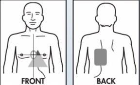
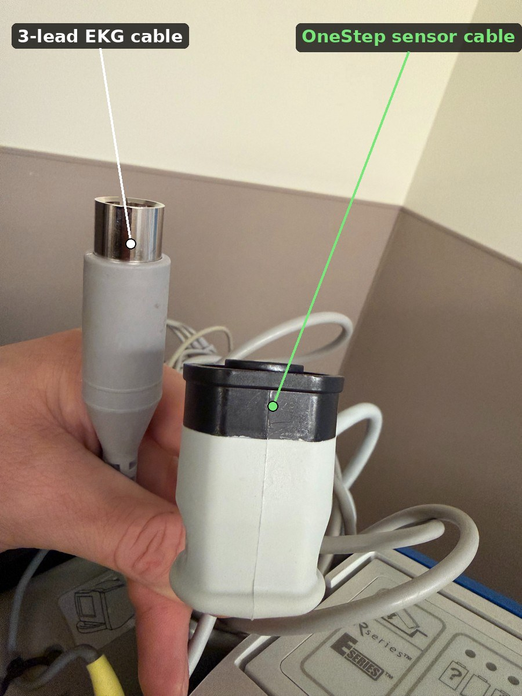
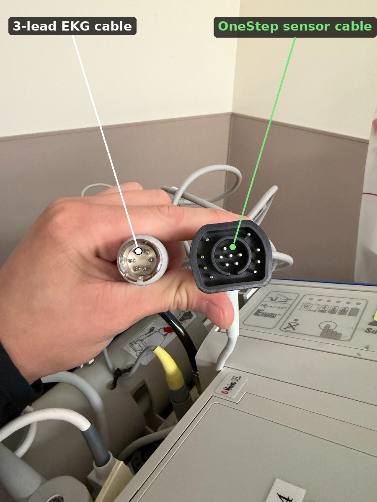

What rate actually does: in demand (synchronous) mode — the standard mode on the ZOLL — the device watches the patient's intrinsic rhythm continuously. If the native rate stays at or above the set rate, the pacer holds off and doesn't fire at all. Once the interval since the last sensed native beat exceeds what the set rate calls for, the pacer fires. So rate isn't just a floor for the paced heart rate — it's the actual trigger for when a pacing stimulus gets delivered.
The specific rates used here — the default, the MD's order, the capture threshold — are arbitrary and chosen for learning purposes. They are not clinical guidance.
The ZOLL's default pacing rate is 70 ppm. At the bedside, the ordering provider will tell you what rate to set. If they don't say, ask what they want the ppm set to — don't assume the default is the target.

Indications: symptomatic bradycardia unresponsive to atropine, especially with hypotension, altered mental status, or signs of shock.


Using the 3-lead built into the One-Step Complete pads. The One-Step Complete pads have their own 3-lead EKG built in, which is what makes them an all-in-one device for TCP — but that means there are two different cables that both carry "3-lead," and they're not interchangeable. Placement matters here too: the pads have to go exactly where the package insert illustration shows in order to pace transcutaneously. The cable matters just as much: the standard 3-lead EKG cable needs to be disconnected, and the ZOLL OneStep Complete 3-lead sensor cable plugged in instead.
If the rhythm sensed through the pads looks unreliable. You can still pace. Reconnect the 3-lead EKG cable to the ZOLL and place it on the patient as a backup method for rhythm sensing, while pacing continues through the pads.